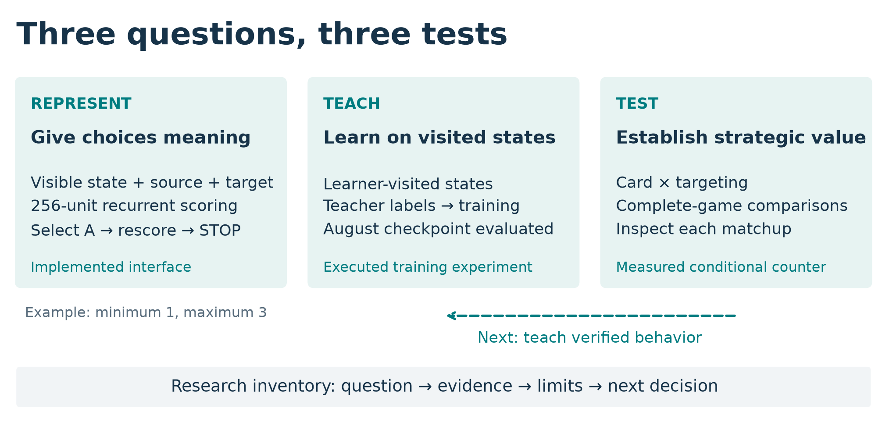

Sixty days of meaningful action design, teacher-guided learning, and controlled deck-policy experiments.
Jonathan Simone
One Darkness Energy can help develop an attacker or enable Munkidori to move damage counters. Both choices are legal; their value depends on what the board needs next. How could I teach a player to make that distinction, and how would I know the lesson was useful?
Over sixty days, I investigated those questions as a solo developer directing AI coding and research agents, which I called the fleet. I implemented a recurrent learner, ran a teacher-guided training experiment, and tested strategic changes in a separate Lucario pilot. A hand-disruption and targeting combination improved game score by approximately 19–20 percentage points against two tested Alakazam implementations. Together, these investigations distinguish representing a decision, learning it, and establishing its value.
| Artifact | Role and contribution |
|---|---|
| Submitted Grimmsnarl player | Tetsutani's unmodified public Damage-Transfer Control; policy c61e540b, deck 92b92bac. September 6: score 834.0, rank 840/6,807. |
| Experimental learner | My semantic encoder, recurrent policy, sequential decoder, and teacher/training integration. The historical August checkpoint and current implementation are identified separately. |
| Experimental Lucario player | My card substitution, targeting change, and evaluations on a derivative of makthanithin's Apache-2.0 community_1084 policy. |
My pre-deadline review required reliable execution and reproducible whole-game benefit from a complete deck-policy product before replacing c61. The reviewed alternatives had not met that standard. c61 supplied a working strategy and a credited teacher/comparator. The original research below belongs to its named experimental branches. [1–3]
The submitted deck develops attackers while distributing damage to prepare future prizes. Its list contains 18 Pokémon, 32 Trainers, and 10 Basic Darkness Energy. Four Impidimp, three Morgrem, three Grimmsnarl ex, and three Rare Candy support attacker development. Four Munkidori and two Froslass support damage placement. Boss's Orders brings prepared targets Active; Night Stretcher recovers resources. [4]
Grimmsnarl's evolution ability accelerates Darkness Energy onto Marnie's Pokémon. Froslass places counters on Pokémon with Abilities on both sides, except Froslass. With Darkness Energy attached, Munkidori can transfer up to three counters from one friendly Pokémon to one opposing Pokémon. Shadow Bullet deals 180 to the Active and 30 to a Benched target. [4]
That creates an allocation problem: Energy placed on Munkidori enables damage transfer, while an attachment elsewhere may prepare the next attacker. Distributed damage can prepare later prizes, but immediate knockouts may change which target matters. The credited submitted policy combines learned option scoring, tactical checks, and specialist fallbacks. Understanding these interactions made the deck and its decision policy the unit of analysis.
A changing legal menu makes “choose option three” an unstable learning target. My v2 learner instead encodes offered actions with their available source/target links. A 256-unit recurrent network combines this information with game context to score the available choices. The state projection uses the acting player's view and excludes hidden-information fields. Recurrence can retain earlier context without exposing an unseen opposing hand. [2]
Optional selections need their own decision model. “Choose up to three” does not require choosing three. My decoder selects without replacement, updates its selection context, and offers a learned STOP choice after satisfying the minimum.
The training objective also respects whether order matters. For an unordered selection, A-then-B and B-then-A produce the same set; it sums their probabilities instead of penalizing a valid order for differing from the teacher's recorded order. Ordered choices retain their sequence.

A learner can reach situations its teacher rarely visits. I implemented tooling to reconstruct player-visible positions and query the credited c61 teacher. In an August experiment, 1,358 labeled learner-visited decisions were mixed into training over ten epochs. The selected epoch-eight checkpoint reduced validation negative log-likelihood from 1.072 to 1.042, assigning greater probability on average to the teacher's recorded choices. This validation set was used for checkpoint selection. [3]
Complete games answered a different question. On the same Grimmsnarl list, that checkpoint won 23 of 1,200 decided games against exact c61; three draws were excluded. It was not a competitive replacement. This comparison does not evaluate the current runtime or isolate the effect of the extra labels. The practical lesson was to require evidence of useful play alongside improved prediction metrics.
The Lucario experiment asks what useful strategic behavior might look like. Mega Lucario ex's Aura Jab deals 130 for one Fighting Energy and can attach up to three discarded Basic Fighting Energy to Benched Pokémon. Mega Brave deals 270 for two Fighting Energy, but that Pokémon cannot use it on its next turn. Developing another attacker and replenishing Energy therefore matter alongside immediate damage. [4]
Against Alakazam, I targeted two resources. Powerful Hand places two damage counters per card in its player's hand. Replacing one Carmine with Xerosic tests the value of reducing that hand to three. A separate targeting change prefers visible Abra or Kadabra when the Alakazam line is detected, threatening future attackers. Reaching those targets may require bringing them Active. [4]
Both changes have costs: disruption spends the Supporter opportunity that could support development or gusting, and attacking an evolving threat can forgo another prize. Alakazam can replenish its hand. I therefore tested the card and policy separately before interpreting their combination.
| Original list | One Carmine replaced by Xerosic | |
|---|---|---|
| Original targeting | Control | Card change alone |
| Modified targeting | Rule change alone | Combined intervention |
One complete four-arm experiment used 8,000 games; the pooled development analysis used 28,000 records including that experiment. Rule-only pooled two comparisons, card-only and combined three each, using within-batch controls, decided games, and inverse-variance weighting on a 40%-Alakazam panel. Estimated improvements were +3.62 percentage points [1.52, 5.72] for targeting, +5.02 [3.30, 6.75] for the card, and +7.82 [6.08, 9.55] combined. Brackets give 95% intervals. The pooled estimates share factorial arms; the interaction did not establish synergy. [5]
The next panel contained 8,400 games: seven opponent implementations, 600 per arm per opponent, balanced at 300 per seat. Here game score is win = 1, draw = ½, loss = 0. Figure 2 shows both absolute scores and differences. [6]
The two Alakazam cells improved by 20.42 and 18.75 points. The other five averaged −0.47 [−2.64, +1.71], leaving broader benefit unresolved. Alakazam gains appeared in both seats. In a separate 16,000-game follow-up, I compared the same Lucario intervention with its baseline against exact c61. With draws excluded, the estimated difference was −0.14 [−1.68, +1.40] points; it did not establish equivalence. Terminal outcomes support these product comparisons, without identifying which individual sequences caused each win. [6]
The counter's value consequently depends on the opposition. If Alakazam occupies an assumed fraction q of a field, equal weighting within the two tested opponent groups gives:
Expected score change = 19.583q − 0.467(1 − q) percentage points.
At q = 0.25, the estimate is +4.55 points. This is sensitivity analysis using the same panel, not a measured metagame or another replication.
This suggests comparing the modified Lucario player with its baseline under several plausible opponent mixtures, including mixtures with little Alakazam. The calculation identifies conditions to investigate; fresh complete games must establish whether promotion helps under the intended mixture.
Trustworthy comparisons also required confirming which policy actually ran. In a recorded July 25 configuration/import failure, an existing policy loaded under a clone label. Execution-time identity and activation checks distinguished missing instrumentation from a recorded zero. A correctly loaded intervention that changed no choices could still yield an informative coverage result. [7]
As the research record grew, recovering earlier findings became its own engineering problem. I organized a source-linked inventory of questions, methods, outcomes, limitations, and conditions for reopening a hypothesis. In one recorded case, recovering an earlier lethal-search audit led to withdrawing a proposed rerun. This memory between research sessions preserves lessons; it is distinct from recurrent memory within a game and changes to trained weights. [7]
These investigations produced an implemented decision interface, an executed teaching experiment, and a tested conditional counter. The reusable method is to connect a game constraint to a design choice, isolate its effect, examine where it holds, and preserve the result with its conditions. The next test is to train a student on decisions from a successful deck-policy product, compare fresh games with its parent on the same deck, and test retention across another iteration.
The attached evidence guide maps [1] submission and retention; [2] learner design; [3] training and student comparison; [4] mechanics; [5] factorial comparisons; [6] opponent results; and [7] research memory. The package includes numerical inputs and a verification command, source excerpts, provenance, and reproduction limits. I used established recurrent and imitation-learning methods; public baselines are credited above. AI agents assisted coding, analysis, and writing under my direction.